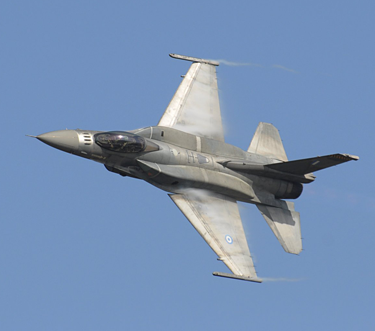
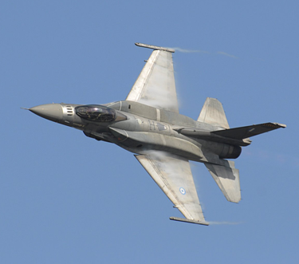

CSC 589 AU / Homework 3 / Image Filtering and Hybrid Images

Is it REALLY just a cat?
This was definitely one of the more challenging problem sets that was assigned, but it was a lot of fun!
Find the Github repository of the code here.
Please click on yan_shi_ps3 to find the code.
TODO
- Convolve using a separable gaussian filter. Right now, the program runs for quite a bit of processing time. Separable filters would fix that.
- Include an applet of some kind on the website! This would require some JavaScrip or a way to render python scripts.
The goal of the project was to create and implement my_imfilter.py which involved coding our own cross correlation function, convolution2d function, a gaussian kernel function, a low pass (blur) function, and a high pass (sharpen) function. We would then use these functions to create a hybrid image, an image that contains the low-pass frequencies of one image and the high-pass frequences of another image. This image is an optical illusion: we are able to see the high pass image from up close but unable to see the low pass image until we are far away enough in distance. This refers to the types of frequencies that we are able to see in certain distances. Lower frequencies can be seen at a farther distance and higher frequencies can be seen up front.
The most difficult part of the setup was the correlation function and the gaussian kernel function. The convolution function required the correlation function, and the gaussian kernel function was required throughout the written program. Let's start talking about the function.
Functions and Algorithms
The functions were given to us and algorithms were based off of the readings in Richard Szeliski's book and in the research article Hybrid Images (Olivia, Torralba, and Schyns). We focus primarily on the standard deviation of the gaussian filter, σ and alpha for the high-pass function in order to determine the best way render the hybridized image. The hybrid image is the sum of the high-pass frequencies of one image and the low-pass frequencies of another image. There was a cut-off frequency that we had to keep in mind in order to properly hybridize the two images together. NOTE: Because of the nature of convolution and the current implementation that I have, the runtime for the program itself can reach up to a minute given the size of the images. So please be patient if you are running the program at all. There are print statments dictating where calculations are happening in the program to ensure that things are working peachy!
Cross Correlation & Convolution
cross_correlate_2d(image, kernel) takes the argument of image and kernel. We pad the image using np.pad and then
we loop through the image from the rows and columns. We determine the window of interest here of the padded image that we would like to
run the correlations for. We initialize an empty list to take in numbers for the total calculation of the window elements times the kernel elements.
We then sum the list that we created and put that in the output[i,j] and return the output.
convolve2d(image, kernel, color) required the above function in order to properly work. There we also determined whether or not the
image was to be convolved with three channels, i.e. it is a color image, or just grayscale (two channels, 2D matrix). Here we had to flip the kernel
to do convolution—this means that the kernel argument in cross_correlate_2d when passed in is kernel that has been flipped in the x and y
direction. If the image is a colored image, then we will split the image's channels and convolve each channel individually before returning the image.
Otherwise, it will continue--much of this information can also be found reading the working file.
Kernel
gaussian_blur_kernel_2d(kernel_size, sigma) is needed by all the other functions and was one of the trickier ones to figure out. Here
we determine the appropriateness of the kernel_size. I disagreed with allowing arbitrary kernel sizes, as most kernels we'll encounter
are usually symmetric in nature. Therefore, our kernels here only reflect a symmetric matrix—which suits our needs perfectly fine. I determined
the gaussian kernel to be the following equation:
gmask = np.exp(-((x**2/float(kernel_size) + y**2/float(kernel_size))/(2*sigma**2))We then also take the
gmask and find the average. This function will not allow even kernel sizes as it is difficult to find the center
of even kernel sizes. Odd kernel sizes guarantee an easy center find. We can also control sigma here as well, which dictates the strength of
blurring.
High Pass and Low Pass
low_pass(image) and high_pass(image) requires the convolve2d() function. The former function
requires only the gaussian_blur_kernel_2d() to be convolved properly. The latter function required two copies of the original image
in order to be properly manipulated. In order to get a high passed image, we subtract the blurred image from the original image, leaving
us with just the sharp bits! We can amplify this sharp bits with alpha.
Results
For the first discussion of the results, I will display both the gray scale and color versions of the hybrid images to show that the program can do both. Other images afterwards will be in COLOR.
Cat & Dog
Original


|
Grayscale


|
Color

|
The high-pass image here was the cat and the low pass iamge was the dog.
Some notable things: alpha=1 for the high_pass filter and sigma=5 for the low_pass filter. I kept the blurring for
the high pass to be the same as the low_pass. If I went any higher than 5, I would often start to see
more artificats and corruption of the image itself—or one image would dominate the other if it was TOO sharp or TOO blurry.
This was the frequency cutoff that was discussed in class.
I also tried this the other way around, i.e. the high-pass image was now the dog and the low-pass image was now the cat.


|
... This doesn't work as well, and it's likely because the cat is such a bright color that it overpowers the dog that's more neutral and natural in its tones. There are very little blending effects.
Bird & Plane
Originals
 

|
Hybrid
The settings from prior were kept the same throughout the images, excepet for next one and the bicycle and motorcycle one.
Marilyn Monroe & Albert Einstein
Original


|
Hybrid


|
Not quite perfect, but it is definitely a successful hybridization of images. The blurred effect of Marilyn Monroe had to be downgraded, as well as the sharpness of Albert Einstein as both of the original images have very intense values. Being cognizant of these values, I made sure to fiddle around the settings to create a satisfactory image.
Fish & Submarine
Original

|
Hybrid
What this specifically taught me was that the colors of images definitely do matter. Take a look at the reverse below.

See how this doesn't work as well? It's likely because the color of the fish is much brighter than the blue of the submarine. Hence, doing it the other way around makes for the most convincing illusion.
Motorcycle & Bicycle
Original


|
Hybrid
As discussed in the paper, because of the brightness of the biccle and the nature of the motorcycle, it is often helpful to make one grayscale and act as a shadow than to have two colored images overlayed on top of each other. I couldn't figure out how to convolve only two channels of the bicycle's high_pass, so I turned it into a grayscael image overall. This still looks pretty convincing, though I would've liked to have kept the color.
For Fun: Emotions
Original
Hybrid

|
And... of course... there were some pretty creepy looking failures.
Happy or grumpy or just scary?
"&:Ghosts", made with Python and a lot of math


|
This goes to show that you shouldn't use pictures that involve in the slighest bit of movement. Also, I recommend pulling these images into a new tab or saving them to zoom in and out on your own!
Final Thoughts
This was, overall, a successful and fun project. However, with more time, I can definitely finess the project and the code to be more efficient with its calculations. I took a bit of leeway with some of the criteria, but I feel as if I have justified my stance. Nonetheless, the results and experimentation that I discovered along the way gives me insight for a better iteration of this project in the near future as a possible web application—this coulde be fun!
Overall, it appeared to be that the frequency cut off for most things was from about 5-7,8. Anything higher would cause the images to look out of sync and unnatural. There could not be too much sharpening or blurring or else one would dominate the other. The striking of balance was necessary and that meant fiddling around with the sigma and the alpha to determine what worked best. If I had to do this again, I think I would rather work in the Fourier space than the spatial space, as the spatial space doesn't allow for that dramatic of a change in terms of sharpening—as that was my biggest issue. Nonetheless, overall, I had a great if not stressful time with this assignment.
Thank you for reading!